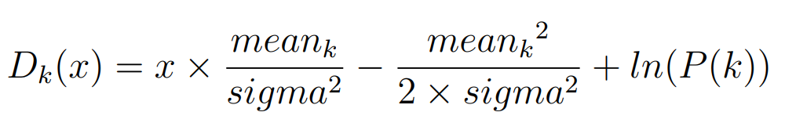
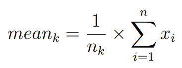
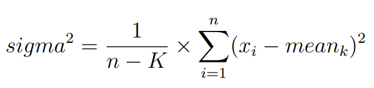
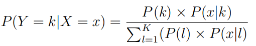

Linear Discriminant Analysis
El LDA (Linear Discriminant Analysis) es un método de clasificación supervisado.
Objetivo
Dado que conocemos que los datos pueden provenir de una de dos (o más) poblaciones conocidas, el objetivo del LDA es clasificar un nuevo dato en una de las poblaciones consideradas.
Origen
La primera aplicación del LDA fue realizada por el estadístico Ronald Fisher en 1933, el cual encontró la solución al problema de clasificar los restos de un cráneo descubiertos en una excavación, como humano, utilizando la distribución de medidas físicas para los cráneos humanos y los de antropoides.
Breve descripción del método
Se dispone de un conjunto amplio de elementos que pueden venir de dos o más poblaciones distintas. En cada elemento se observa una variable aleatoria X, que es p-dimensional, cuya distribución se conoce en las poblaciones consideradas. Se desea clasificar un nuevo elemento, con valores de la variable X. Este método implica lo que se llama reconocimiento de patrones (pattern recognition).
Dada una variable dependiente cualititativa que diferencia los grupos y un vector X de variables independientes cuantitativas, el LDA consiste en obtener funciones lineales de éstas, denominadas funciones discriminantes, cuya fórmula es la siguiente, considerando el caso simplificado de una sola variable independiente:
Donde:

LDA realiza predicciones estimando la probabilidad de que un nuevo vector x pertenezca a cada clase. La clase que tenga la mayor probabilidad es la clase asignada, realizándose una predicción. El modelo utiliza el Teorema de Bayes para estimar las probabilidades.
Donde:
- P(Y = k | X = x) es la probabilidad de que el caso con variable independiente de valor x pertenezca a la clase k.
- P(k) es la probabilidad de pertenecer a la clase k. Esto se estima a partir de la proporción de ejemplos en dicha clase sobre el total en el dataset.
- P(x | k) es la probabilidad a priori de que, dado que pertenece a la clase k, la variable independiente tenga el valor x. Esto se estima mediante la función discriminante Dk(x) mencionada anteriormente.
La funciones discriminantes de k surgen al realizar una estimación de P(x | k) sobre la función de probabilidad vista anteriormente, asumiendo que los predictores tienen una distribución Gaussiana y son condicionalmente independientes.